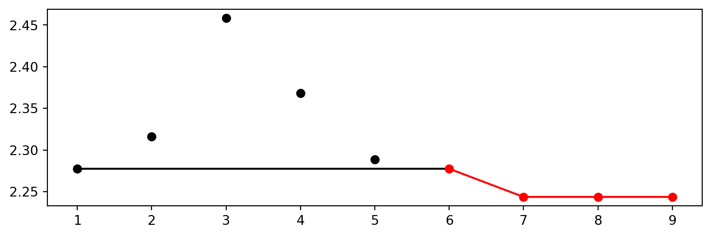
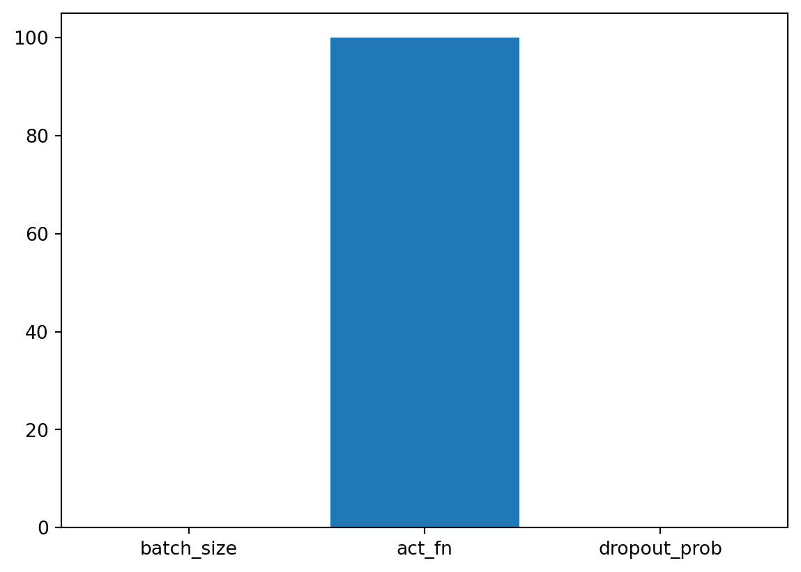
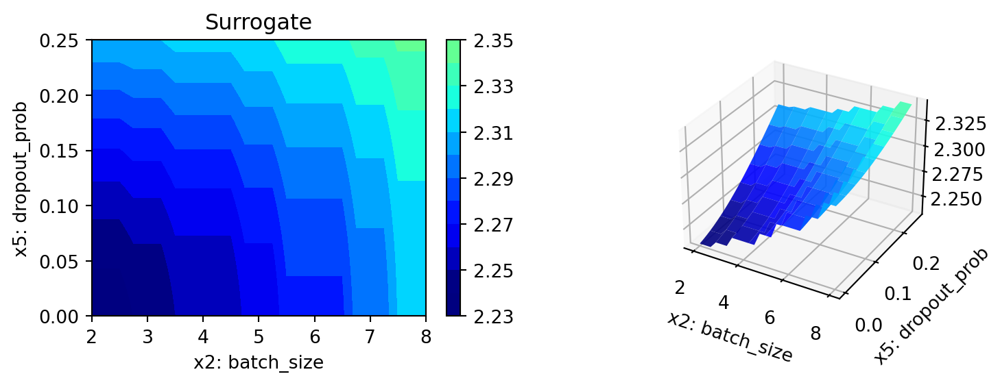
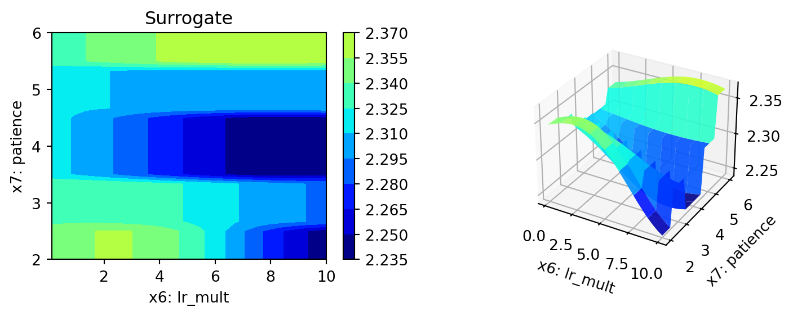
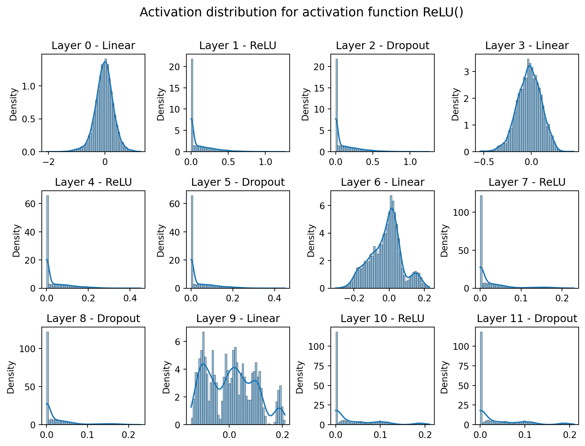

# import sys
# !{sys.executable} -m pip install --upgrade build
# !{sys.executable} -m pip install --upgrade --force-reinstall spotPython17 HPT PyTorch Lightning: VBDP
In this tutorial, we will show how spotPython can be integrated into the PyTorch Lightning training workflow for a classification task.
Caution: Data must be downloaded manually
- Ensure that the corresponding data is available as
./data/VBDP/train.csv.
This document refers to the latest spotPython version, which can be installed via pip. Alternatively, the source code can be downloaded from gitHub: https://github.com/sequential-parameter-optimization/spotPython.
- Uncomment the following lines if you want to for (re-)installation the latest version of
spotPythonfrom GitHub.
17.1 Step 1: Setup
- Before we consider the detailed experimental setup, we select the parameters that affect run time, initial design size, etc.
- The parameter
MAX_TIMEspecifies the maximum run time in seconds. - The parameter
INIT_SIZEspecifies the initial design size. - The parameter
WORKERSspecifies the number of workers. - The prefix
PREFIXis used for the experiment name and the name of the log file.
MAX_TIME = 1
INIT_SIZE = 5
WORKERS = 0
PREFIX="31"
Caution: Run time and initial design size should be increased for real experiments
MAX_TIMEis set to one minute for demonstration purposes. For real experiments, this should be increased to at least 1 hour.INIT_SIZEis set to 5 for demonstration purposes. For real experiments, this should be increased to at least 10.WORKERSis set to 0 for demonstration purposes. For real experiments, this should be increased. See the warnings that are printed when the number of workers is set to 0.
Note: Device selection
- Although there are no .cuda() or .to(device) calls required, because Lightning does these for you, see LIGHTNINGMODULE, we would like to know which device is used. Threrefore, we imitate the LightningModule behaviour which selects the highest device.
- The method
spotPython.utils.device.getDevice()returns the device that is used by Lightning.
17.2 Step 2: Initialization of the fun_control Dictionary
spotPython uses a Python dictionary for storing the information required for the hyperparameter tuning process, which was described in Section 12.2, see Initialization of the fun_control Dictionary in the documentation.
from spotPython.utils.init import fun_control_init
from spotPython.utils.file import get_experiment_name, get_spot_tensorboard_path
from spotPython.utils.device import getDevice
experiment_name = get_experiment_name(prefix=PREFIX)
fun_control = fun_control_init(
spot_tensorboard_path=get_spot_tensorboard_path(experiment_name),
num_workers=WORKERS,
device=getDevice(),
_L_in=64,
_L_out=11)fun_control["device"]'mps'17.3 Step 3: PyTorch Data Loading
17.3.1 Lightning Dataset and DataModule
The data loading and preprocessing is handled by Lightning and PyTorch. It comprehends the following classes:
CSVDataset: A class that loads the data from a CSV file. [SOURCE]CSVDataModule: A class that prepares the data for training and testing. [SOURCE]
Section Section 17.12.2 illustrates how to access the data.
17.4 Step 4: Preprocessing
Preprocessing is handled by Lightning and PyTorch. It can be implemented in the CSVDataModule class [SOURCE] and is described in the LIGHTNINGDATAMODULE documentation. Here you can find information about the transforms methods.
17.5 Step 5: Select the NN Model (algorithm) and core_model_hyper_dict
spotPython includes the NetLightBase class [SOURCE] for configurable neural networks. The class is imported here. It inherits from the class Lightning.LightningModule, which is the base class for all models in Lightning. Lightning.LightningModule is a subclass of torch.nn.Module and provides additional functionality for the training and testing of neural networks. The class Lightning.LightningModule is described in the Lightning documentation.
- Here we simply add the NN Model to the fun_control dictionary by calling the function
add_core_model_to_fun_control:
from spotPython.light.netlightbase import NetLightBase
from spotPython.data.light_hyper_dict import LightHyperDict
from spotPython.hyperparameters.values import add_core_model_to_fun_control
add_core_model_to_fun_control(core_model=NetLightBase,
fun_control=fun_control,
hyper_dict= LightHyperDict)The NetLightBase is a configurable neural network. The hyperparameters of the model are specified in the core_model_hyper_dict dictionary [SOURCE].
17.6 Step 6: Modify hyper_dict Hyperparameters for the Selected Algorithm aka core_model
spotPython provides functions for modifying the hyperparameters, their bounds and factors as well as for activating and de-activating hyperparameters without re-compilation of the Python source code. These functions were described in Section 12.6.
Caution: Small number of epochs for demonstration purposes
epochsandpatienceare set to small values for demonstration purposes. These values are too small for a real application.- More resonable values are, e.g.:
modify_hyper_parameter_bounds(fun_control, "epochs", bounds=[7, 9])andmodify_hyper_parameter_bounds(fun_control, "patience", bounds=[2, 7])
from spotPython.hyperparameters.values import modify_hyper_parameter_bounds
modify_hyper_parameter_bounds(fun_control, "l1", bounds=[5,8])
modify_hyper_parameter_bounds(fun_control, "epochs", bounds=[6,13])
modify_hyper_parameter_bounds(fun_control, "batch_size", bounds=[2, 8])from spotPython.hyperparameters.values import modify_hyper_parameter_levels
modify_hyper_parameter_levels(fun_control, "optimizer",["Adam", "AdamW", "Adamax", "NAdam"])
# modify_hyper_parameter_levels(fun_control, "optimizer", ["Adam"])Now, the dictionary fun_control contains all information needed for the hyperparameter tuning. Before the hyperparameter tuning is started, it is recommended to take a look at the experimental design. The method gen_design_table [SOURCE] generates a design table as follows:
from spotPython.utils.eda import gen_design_table
print(gen_design_table(fun_control))| name | type | default | lower | upper | transform |
|----------------|--------|-----------|---------|---------|-----------------------|
| l1 | int | 3 | 5 | 8 | transform_power_2_int |
| epochs | int | 4 | 6 | 13 | transform_power_2_int |
| batch_size | int | 4 | 2 | 8 | transform_power_2_int |
| act_fn | factor | ReLU | 0 | 5 | None |
| optimizer | factor | SGD | 0 | 3 | None |
| dropout_prob | float | 0.01 | 0 | 0.25 | None |
| lr_mult | float | 1.0 | 0.1 | 10 | None |
| patience | int | 2 | 2 | 6 | transform_power_2_int |
| initialization | factor | Default | 0 | 2 | None |This allows to check if all information is available and if the information is correct.
Note: Hyperparameters of the Tuned Model and the
fun_control Dictionary
The updated fun_control dictionary can be shown with the command fun_control["core_model_hyper_dict"].
17.7 Step 7: Data Splitting, the Objective (Loss) Function and the Metric
17.7.1 Evaluation
The evaluation procedure requires the specification of two elements:
- the way how the data is split into a train and a test set (see Section 12.7.1)
- the loss function (and a metric).
Caution: Data Splitting in Lightning
- The data splitting is handled by
Lightning.
17.7.2 Loss Functions and Metrics
The loss function is specified in the configurable network class [SOURCE] We will use CrossEntropy loss for the multiclass-classification task.
17.7.3 Metric
- We will use the MAP@k metric [SOURCE] for the evaluation of the model.
- An example, how this metric works, is shown in the Appendix, see Section {Section 17.12.3}.
Similar to the loss function, the metric is specified in the configurable network class [SOURCE].
Caution: Loss Function and Metric in Lightning
- The loss function and the metric are not hyperparameters that can be tuned with
spotPython. - They are handled by
Lightning.
17.8 Step 8: Calling the SPOT Function
17.8.1 Preparing the SPOT Call
The following code passes the information about the parameter ranges and bounds to spot. It extracts the variable types, names, and bounds
from spotPython.hyperparameters.values import (get_bound_values,
get_var_name,
get_var_type,)
var_type = get_var_type(fun_control)
var_name = get_var_name(fun_control)
lower = get_bound_values(fun_control, "lower")
upper = get_bound_values(fun_control, "upper")17.8.2 The Objective Function fun
The objective function fun from the class HyperLight [SOURCE] is selected next. It implements an interface from PyTorch’s training, validation, and testing methods to spotPython.
from spotPython.fun.hyperlight import HyperLight
fun = HyperLight().fun17.8.3 Starting the Hyperparameter Tuning
The spotPython hyperparameter tuning is started by calling the Spot function [SOURCE] as described in Section 12.8.4.
import numpy as np
from spotPython.spot import spot
from math import inf
spot_tuner = spot.Spot(fun=fun,
lower = lower,
upper = upper,
fun_evals = inf,
max_time = MAX_TIME,
tolerance_x = np.sqrt(np.spacing(1)),
var_type = var_type,
var_name = var_name,
show_progress= True,
fun_control = fun_control,
design_control={"init_size": INIT_SIZE},
surrogate_control={"noise": True,
"min_theta": -4,
"max_theta": 3,
"n_theta": len(var_name),
"model_fun_evals": 10_000,
})
spot_tuner.run()
config: {'l1': 256, 'epochs': 4096, 'batch_size': 32, 'act_fn': ReLU(), 'optimizer': 'AdamW', 'dropout_prob': 0.10939527466721133, 'lr_mult': 4.211776903906428, 'patience': 16, 'initialization': 'Default'}┏━━━━━━━━━━━━━━━━━━━━━━━━━━━┳━━━━━━━━━━━━━━━━━━━━━━━━━━━┓ ┃ Validate metric ┃ DataLoader 0 ┃ ┡━━━━━━━━━━━━━━━━━━━━━━━━━━━╇━━━━━━━━━━━━━━━━━━━━━━━━━━━┩ │ hp_metric │ 2.277459144592285 │ │ val_acc │ 0.2614840865135193 │ │ val_loss │ 2.277459144592285 │ │ valid_mapk │ 0.3560313582420349 │ └───────────────────────────┴───────────────────────────┘
config: {'l1': 32, 'epochs': 128, 'batch_size': 256, 'act_fn': LeakyReLU(), 'optimizer': 'Adamax', 'dropout_prob': 0.012926647388264517, 'lr_mult': 0.832718394912432, 'patience': 8, 'initialization': 'Kaiming'}┏━━━━━━━━━━━━━━━━━━━━━━━━━━━┳━━━━━━━━━━━━━━━━━━━━━━━━━━━┓ ┃ Validate metric ┃ DataLoader 0 ┃ ┡━━━━━━━━━━━━━━━━━━━━━━━━━━━╇━━━━━━━━━━━━━━━━━━━━━━━━━━━┩ │ hp_metric │ 2.3159217834472656 │ │ val_acc │ 0.19434629380702972 │ │ val_loss │ 2.3159217834472656 │ │ valid_mapk │ 0.3128134608268738 │ └───────────────────────────┴───────────────────────────┘
config: {'l1': 128, 'epochs': 256, 'batch_size': 8, 'act_fn': Swish(), 'optimizer': 'NAdam', 'dropout_prob': 0.22086376796923401, 'lr_mult': 7.65501078489161, 'patience': 64, 'initialization': 'Xavier'}┏━━━━━━━━━━━━━━━━━━━━━━━━━━━┳━━━━━━━━━━━━━━━━━━━━━━━━━━━┓ ┃ Validate metric ┃ DataLoader 0 ┃ ┡━━━━━━━━━━━━━━━━━━━━━━━━━━━╇━━━━━━━━━━━━━━━━━━━━━━━━━━━┩ │ hp_metric │ 2.4582345485687256 │ │ val_acc │ 0.08480565249919891 │ │ val_loss │ 2.4582345485687256 │ │ valid_mapk │ 0.16473765671253204 │ └───────────────────────────┴───────────────────────────┘
config: {'l1': 64, 'epochs': 512, 'batch_size': 16, 'act_fn': Sigmoid(), 'optimizer': 'Adam', 'dropout_prob': 0.1890928563375006, 'lr_mult': 2.3450676871382794, 'patience': 32, 'initialization': 'Kaiming'}┏━━━━━━━━━━━━━━━━━━━━━━━━━━━┳━━━━━━━━━━━━━━━━━━━━━━━━━━━┓ ┃ Validate metric ┃ DataLoader 0 ┃ ┡━━━━━━━━━━━━━━━━━━━━━━━━━━━╇━━━━━━━━━━━━━━━━━━━━━━━━━━━┩ │ hp_metric │ 2.36840558052063 │ │ val_acc │ 0.16961130499839783 │ │ val_loss │ 2.36840558052063 │ │ valid_mapk │ 0.2375841736793518 │ └───────────────────────────┴───────────────────────────┘
config: {'l1': 64, 'epochs': 4096, 'batch_size': 64, 'act_fn': ReLU(), 'optimizer': 'Adamax', 'dropout_prob': 0.0708380794924471, 'lr_mult': 9.528945328733357, 'patience': 4, 'initialization': 'Xavier'}┏━━━━━━━━━━━━━━━━━━━━━━━━━━━┳━━━━━━━━━━━━━━━━━━━━━━━━━━━┓ ┃ Validate metric ┃ DataLoader 0 ┃ ┡━━━━━━━━━━━━━━━━━━━━━━━━━━━╇━━━━━━━━━━━━━━━━━━━━━━━━━━━┩ │ hp_metric │ 2.2885937690734863 │ │ val_acc │ 0.24028268456459045 │ │ val_loss │ 2.2885937690734863 │ │ valid_mapk │ 0.35175541043281555 │ └───────────────────────────┴───────────────────────────┘
config: {'l1': 128, 'epochs': 4096, 'batch_size': 4, 'act_fn': ReLU(), 'optimizer': 'AdamW', 'dropout_prob': 0.24153924846128919, 'lr_mult': 0.6601900213808697, 'patience': 16, 'initialization': 'Xavier'}┏━━━━━━━━━━━━━━━━━━━━━━━━━━━┳━━━━━━━━━━━━━━━━━━━━━━━━━━━┓ ┃ Validate metric ┃ DataLoader 0 ┃ ┡━━━━━━━━━━━━━━━━━━━━━━━━━━━╇━━━━━━━━━━━━━━━━━━━━━━━━━━━┩ │ hp_metric │ 2.2994933128356934 │ │ val_acc │ 0.22614841163158417 │ │ val_loss │ 2.2994933128356934 │ │ valid_mapk │ 0.31924888491630554 │ └───────────────────────────┴───────────────────────────┘
spotPython tuning: 2.277459144592285 [#######---] 68.29%
config: {'l1': 64, 'epochs': 4096, 'batch_size': 8, 'act_fn': ReLU(), 'optimizer': 'AdamW', 'dropout_prob': 0.0, 'lr_mult': 8.678730185374194, 'patience': 4, 'initialization': 'Default'}┏━━━━━━━━━━━━━━━━━━━━━━━━━━━┳━━━━━━━━━━━━━━━━━━━━━━━━━━━┓ ┃ Validate metric ┃ DataLoader 0 ┃ ┡━━━━━━━━━━━━━━━━━━━━━━━━━━━╇━━━━━━━━━━━━━━━━━━━━━━━━━━━┩ │ hp_metric │ 2.243631362915039 │ │ val_acc │ 0.30035334825515747 │ │ val_loss │ 2.243631362915039 │ │ valid_mapk │ 0.3738425672054291 │ └───────────────────────────┴───────────────────────────┘
spotPython tuning: 2.243631362915039 [########--] 82.34%
config: {'l1': 64, 'epochs': 2048, 'batch_size': 128, 'act_fn': ReLU(), 'optimizer': 'AdamW', 'dropout_prob': 0.0, 'lr_mult': 6.942278168802521, 'patience': 4, 'initialization': 'Xavier'}┏━━━━━━━━━━━━━━━━━━━━━━━━━━━┳━━━━━━━━━━━━━━━━━━━━━━━━━━━┓ ┃ Validate metric ┃ DataLoader 0 ┃ ┡━━━━━━━━━━━━━━━━━━━━━━━━━━━╇━━━━━━━━━━━━━━━━━━━━━━━━━━━┩ │ hp_metric │ 2.2953238487243652 │ │ val_acc │ 0.23674911260604858 │ │ val_loss │ 2.2953238487243652 │ │ valid_mapk │ 0.35479357838630676 │ └───────────────────────────┴───────────────────────────┘
spotPython tuning: 2.243631362915039 [#########-] 86.46%
config: {'l1': 64, 'epochs': 8192, 'batch_size': 4, 'act_fn': ReLU(), 'optimizer': 'Adamax', 'dropout_prob': 0.25, 'lr_mult': 10.0, 'patience': 4, 'initialization': 'Default'}┏━━━━━━━━━━━━━━━━━━━━━━━━━━━┳━━━━━━━━━━━━━━━━━━━━━━━━━━━┓ ┃ Validate metric ┃ DataLoader 0 ┃ ┡━━━━━━━━━━━━━━━━━━━━━━━━━━━╇━━━━━━━━━━━━━━━━━━━━━━━━━━━┩ │ hp_metric │ 2.314422845840454 │ │ val_acc │ 0.19434629380702972 │ │ val_loss │ 2.314422845840454 │ │ valid_mapk │ 0.3075117766857147 │ └───────────────────────────┴───────────────────────────┘
spotPython tuning: 2.243631362915039 [##########] 100.00% Done...
<spotPython.spot.spot.Spot at 0x2a35a6920>17.9 Step 9: Tensorboard
The textual output shown in the console (or code cell) can be visualized with Tensorboard.
tensorboard --logdir="runs/"Further information can be found in the PyTorch Lightning documentation for Tensorboard.
17.10 Step 10: Results
After the hyperparameter tuning run is finished, the results can be analyzed as described in Section 12.10.
spot_tuner.plot_progress(log_y=False,
filename="./figures/" + experiment_name+"_progress.png")
from spotPython.utils.eda import gen_design_table
print(gen_design_table(fun_control=fun_control, spot=spot_tuner))| name | type | default | lower | upper | tuned | transform | importance | stars |
|----------------|--------|-----------|---------|---------|-------------------|-----------------------|--------------|---------|
| l1 | int | 3 | 5.0 | 8.0 | 6.0 | transform_power_2_int | 0.00 | |
| epochs | int | 4 | 6.0 | 13.0 | 12.0 | transform_power_2_int | 0.00 | |
| batch_size | int | 4 | 2.0 | 8.0 | 3.0 | transform_power_2_int | 0.13 | . |
| act_fn | factor | ReLU | 0.0 | 5.0 | 2.0 | None | 100.00 | *** |
| optimizer | factor | SGD | 0.0 | 3.0 | 1.0 | None | 0.00 | |
| dropout_prob | float | 0.01 | 0.0 | 0.25 | 0.0 | None | 0.12 | . |
| lr_mult | float | 1.0 | 0.1 | 10.0 | 8.678730185374194 | None | 0.00 | |
| patience | int | 2 | 2.0 | 6.0 | 2.0 | transform_power_2_int | 0.00 | |
| initialization | factor | Default | 0.0 | 2.0 | 0.0 | None | 0.00 | |spot_tuner.plot_importance(threshold=0.025,
filename="./figures/" + experiment_name+"_importance.png")
17.10.1 Get the Tuned Architecture
from spotPython.light.utils import get_tuned_architecture
config = get_tuned_architecture(spot_tuner, fun_control)- Test on the full data set
from spotPython.light.traintest import test_model
test_model(config, fun_control)┏━━━━━━━━━━━━━━━━━━━━━━━━━━━┳━━━━━━━━━━━━━━━━━━━━━━━━━━━┓ ┃ Test metric ┃ DataLoader 0 ┃ ┡━━━━━━━━━━━━━━━━━━━━━━━━━━━╇━━━━━━━━━━━━━━━━━━━━━━━━━━━┩ │ hp_metric │ 2.2711098194122314 │ │ test_mapk_epoch │ 0.3448033630847931 │ │ val_acc │ 0.24328146874904633 │ │ val_loss │ 2.2711098194122314 │ └───────────────────────────┴───────────────────────────┘
(2.2711098194122314, 0.24328146874904633)from spotPython.light.traintest import load_light_from_checkpoint
model_loaded = load_light_from_checkpoint(config, fun_control)Loading model from runs/lightning_logs/64_4096_8_ReLU()_AdamW_0.0_8.678730185374194_4_Default_TEST/checkpoints/last.ckpt17.10.2 Cross Validation With Lightning
- The
KFoldclass fromsklearn.model_selectionis used to generate the folds for cross-validation. - These mechanism is used to generate the folds for the final evaluation of the model.
- The
CrossValidationDataModuleclass [SOURCE] is used to generate the folds for the hyperparameter tuning process. - It is called from the
cv_modelfunction [SOURCE].
from spotPython.light.traintest import cv_model
# set the number of folds to 10
fun_control["k_folds"] = 10
cv_model(config, fun_control)k: 0
Train Dataset Size: 636
Val Dataset Size: 71┏━━━━━━━━━━━━━━━━━━━━━━━━━━━┳━━━━━━━━━━━━━━━━━━━━━━━━━━━┓ ┃ Validate metric ┃ DataLoader 0 ┃ ┡━━━━━━━━━━━━━━━━━━━━━━━━━━━╇━━━━━━━━━━━━━━━━━━━━━━━━━━━┩ │ hp_metric │ 2.2043471336364746 │ │ val_acc │ 0.3239436745643616 │ │ val_loss │ 2.2043471336364746 │ │ valid_mapk │ 0.4107142686843872 │ └───────────────────────────┴───────────────────────────┘
train_model result: {'valid_mapk': 0.4107142686843872, 'val_loss': 2.2043471336364746, 'val_acc': 0.3239436745643616, 'hp_metric': 2.2043471336364746}
k: 1
Train Dataset Size: 636
Val Dataset Size: 71┏━━━━━━━━━━━━━━━━━━━━━━━━━━━┳━━━━━━━━━━━━━━━━━━━━━━━━━━━┓ ┃ Validate metric ┃ DataLoader 0 ┃ ┡━━━━━━━━━━━━━━━━━━━━━━━━━━━╇━━━━━━━━━━━━━━━━━━━━━━━━━━━┩ │ hp_metric │ 2.26342511177063 │ │ val_acc │ 0.28169015049934387 │ │ val_loss │ 2.26342511177063 │ │ valid_mapk │ 0.36177247762680054 │ └───────────────────────────┴───────────────────────────┘
train_model result: {'valid_mapk': 0.36177247762680054, 'val_loss': 2.26342511177063, 'val_acc': 0.28169015049934387, 'hp_metric': 2.26342511177063}
k: 2
Train Dataset Size: 636
Val Dataset Size: 71┏━━━━━━━━━━━━━━━━━━━━━━━━━━━┳━━━━━━━━━━━━━━━━━━━━━━━━━━━┓ ┃ Validate metric ┃ DataLoader 0 ┃ ┡━━━━━━━━━━━━━━━━━━━━━━━━━━━╇━━━━━━━━━━━━━━━━━━━━━━━━━━━┩ │ hp_metric │ 2.331244468688965 │ │ val_acc │ 0.1690140813589096 │ │ val_loss │ 2.331244468688965 │ │ valid_mapk │ 0.2172619104385376 │ └───────────────────────────┴───────────────────────────┘
train_model result: {'valid_mapk': 0.2172619104385376, 'val_loss': 2.331244468688965, 'val_acc': 0.1690140813589096, 'hp_metric': 2.331244468688965}
k: 3
Train Dataset Size: 636
Val Dataset Size: 71┏━━━━━━━━━━━━━━━━━━━━━━━━━━━┳━━━━━━━━━━━━━━━━━━━━━━━━━━━┓ ┃ Validate metric ┃ DataLoader 0 ┃ ┡━━━━━━━━━━━━━━━━━━━━━━━━━━━╇━━━━━━━━━━━━━━━━━━━━━━━━━━━┩ │ hp_metric │ 2.285844564437866 │ │ val_acc │ 0.22535210847854614 │ │ val_loss │ 2.285844564437866 │ │ valid_mapk │ 0.3379629850387573 │ └───────────────────────────┴───────────────────────────┘
train_model result: {'valid_mapk': 0.3379629850387573, 'val_loss': 2.285844564437866, 'val_acc': 0.22535210847854614, 'hp_metric': 2.285844564437866}
k: 4
Train Dataset Size: 636
Val Dataset Size: 71┏━━━━━━━━━━━━━━━━━━━━━━━━━━━┳━━━━━━━━━━━━━━━━━━━━━━━━━━━┓ ┃ Validate metric ┃ DataLoader 0 ┃ ┡━━━━━━━━━━━━━━━━━━━━━━━━━━━╇━━━━━━━━━━━━━━━━━━━━━━━━━━━┩ │ hp_metric │ 2.348761796951294 │ │ val_acc │ 0.18309858441352844 │ │ val_loss │ 2.348761796951294 │ │ valid_mapk │ 0.25264549255371094 │ └───────────────────────────┴───────────────────────────┘
train_model result: {'valid_mapk': 0.25264549255371094, 'val_loss': 2.348761796951294, 'val_acc': 0.18309858441352844, 'hp_metric': 2.348761796951294}
k: 5
Train Dataset Size: 636
Val Dataset Size: 71┏━━━━━━━━━━━━━━━━━━━━━━━━━━━┳━━━━━━━━━━━━━━━━━━━━━━━━━━━┓ ┃ Validate metric ┃ DataLoader 0 ┃ ┡━━━━━━━━━━━━━━━━━━━━━━━━━━━╇━━━━━━━━━━━━━━━━━━━━━━━━━━━┩ │ hp_metric │ 2.3252155780792236 │ │ val_acc │ 0.2112676054239273 │ │ val_loss │ 2.3252155780792236 │ │ valid_mapk │ 0.3343254327774048 │ └───────────────────────────┴───────────────────────────┘
train_model result: {'valid_mapk': 0.3343254327774048, 'val_loss': 2.3252155780792236, 'val_acc': 0.2112676054239273, 'hp_metric': 2.3252155780792236}
k: 6
Train Dataset Size: 636
Val Dataset Size: 71┏━━━━━━━━━━━━━━━━━━━━━━━━━━━┳━━━━━━━━━━━━━━━━━━━━━━━━━━━┓ ┃ Validate metric ┃ DataLoader 0 ┃ ┡━━━━━━━━━━━━━━━━━━━━━━━━━━━╇━━━━━━━━━━━━━━━━━━━━━━━━━━━┩ │ hp_metric │ 2.289710521697998 │ │ val_acc │ 0.23943662643432617 │ │ val_loss │ 2.289710521697998 │ │ valid_mapk │ 0.33564817905426025 │ └───────────────────────────┴───────────────────────────┘
train_model result: {'valid_mapk': 0.33564817905426025, 'val_loss': 2.289710521697998, 'val_acc': 0.23943662643432617, 'hp_metric': 2.289710521697998}
k: 7
Train Dataset Size: 637
Val Dataset Size: 70┏━━━━━━━━━━━━━━━━━━━━━━━━━━━┳━━━━━━━━━━━━━━━━━━━━━━━━━━━┓ ┃ Validate metric ┃ DataLoader 0 ┃ ┡━━━━━━━━━━━━━━━━━━━━━━━━━━━╇━━━━━━━━━━━━━━━━━━━━━━━━━━━┩ │ hp_metric │ 2.3087875843048096 │ │ val_acc │ 0.2142857164144516 │ │ val_loss │ 2.3087875843048096 │ │ valid_mapk │ 0.29629626870155334 │ └───────────────────────────┴───────────────────────────┘
train_model result: {'valid_mapk': 0.29629626870155334, 'val_loss': 2.3087875843048096, 'val_acc': 0.2142857164144516, 'hp_metric': 2.3087875843048096}
k: 8
Train Dataset Size: 637
Val Dataset Size: 70┏━━━━━━━━━━━━━━━━━━━━━━━━━━━┳━━━━━━━━━━━━━━━━━━━━━━━━━━━┓ ┃ Validate metric ┃ DataLoader 0 ┃ ┡━━━━━━━━━━━━━━━━━━━━━━━━━━━╇━━━━━━━━━━━━━━━━━━━━━━━━━━━┩ │ hp_metric │ 2.3037796020507812 │ │ val_acc │ 0.2142857164144516 │ │ val_loss │ 2.3037796020507812 │ │ valid_mapk │ 0.34876543283462524 │ └───────────────────────────┴───────────────────────────┘
train_model result: {'valid_mapk': 0.34876543283462524, 'val_loss': 2.3037796020507812, 'val_acc': 0.2142857164144516, 'hp_metric': 2.3037796020507812}
k: 9
Train Dataset Size: 637
Val Dataset Size: 70┏━━━━━━━━━━━━━━━━━━━━━━━━━━━┳━━━━━━━━━━━━━━━━━━━━━━━━━━━┓ ┃ Validate metric ┃ DataLoader 0 ┃ ┡━━━━━━━━━━━━━━━━━━━━━━━━━━━╇━━━━━━━━━━━━━━━━━━━━━━━━━━━┩ │ hp_metric │ 2.3446907997131348 │ │ val_acc │ 0.18571428954601288 │ │ val_loss │ 2.3446907997131348 │ │ valid_mapk │ 0.29783952236175537 │ └───────────────────────────┴───────────────────────────┘
train_model result: {'valid_mapk': 0.29783952236175537, 'val_loss': 2.3446907997131348, 'val_acc': 0.18571428954601288, 'hp_metric': 2.3446907997131348}0.31932319700717926
Note: Evaluation for the Final Comaprison
- This is the evaluation that will be used in the comparison.
17.10.3 Detailed Hyperparameter Plots
filename = "./figures/" + experiment_name
spot_tuner.plot_important_hyperparameter_contour(filename=filename)batch_size: 0.13297357834444154
act_fn: 100.0
dropout_prob: 0.12166398545327557


17.10.4 Parallel Coordinates Plot
spot_tuner.parallel_plot()Parallel coordinates plots
17.10.5 Plot all Combinations of Hyperparameters
- Warning: this may take a while.
PLOT_ALL = False
if PLOT_ALL:
n = spot_tuner.k
for i in range(n-1):
for j in range(i+1, n):
spot_tuner.plot_contour(i=i, j=j, min_z=min_z, max_z = max_z)17.10.6 Visualizing the Activation Distribution
Reference:
- The following code is based on [PyTorch Lightning TUTORIAL 2: ACTIVATION FUNCTIONS], Author: Phillip Lippe, License: [CC BY-SA], Generated: 2023-03-15T09:52:39.179933.
After we have trained the models, we can look at the actual activation values that find inside the model. For instance, how many neurons are set to zero in ReLU? Where do we find most values in Tanh? To answer these questions, we can write a simple function which takes a trained model, applies it to a batch of images, and plots the histogram of the activations inside the network:
from spotPython.torch.activation import Sigmoid, Tanh, ReLU, LeakyReLU, ELU, Swish
act_fn_by_name = {"sigmoid": Sigmoid, "tanh": Tanh, "relu": ReLU, "leakyrelu": LeakyReLU, "elu": ELU, "swish": Swish}from spotPython.hyperparameters.values import get_one_config_from_X
X = spot_tuner.to_all_dim(spot_tuner.min_X.reshape(1,-1))
config = get_one_config_from_X(X, fun_control)
model = fun_control["core_model"](**config, _L_in=64, _L_out=11)
modelNetLightBase(
(train_mapk): MAPK()
(valid_mapk): MAPK()
(test_mapk): MAPK()
(layers): Sequential(
(0): Linear(in_features=64, out_features=64, bias=True)
(1): ReLU()
(2): Dropout(p=0.0, inplace=False)
(3): Linear(in_features=64, out_features=32, bias=True)
(4): ReLU()
(5): Dropout(p=0.0, inplace=False)
(6): Linear(in_features=32, out_features=32, bias=True)
(7): ReLU()
(8): Dropout(p=0.0, inplace=False)
(9): Linear(in_features=32, out_features=16, bias=True)
(10): ReLU()
(11): Dropout(p=0.0, inplace=False)
(12): Linear(in_features=16, out_features=11, bias=True)
)
)from spotPython.utils.eda import visualize_activations
visualize_activations(model, color=f"C{0}")
17.11 Submission
import numpy as np
import pandas as pd
from sklearn.preprocessing import OrdinalEncoderimport pandas as pd
from sklearn.preprocessing import OrdinalEncoder
train_df = pd.read_csv('./data/VBDP/train.csv', index_col=0)
# remove the id column
# train_df = train_df.drop(columns=['id'])
n_samples = train_df.shape[0]
n_features = train_df.shape[1] - 1
target_column = "prognosis"
# Encode our prognosis labels as integers for easier decoding later
enc = OrdinalEncoder()
y = enc.fit_transform(train_df[[target_column]])
test_df = pd.read_csv('./data/VBDP/test.csv', index_col=0)
test_df| sudden_fever | headache | mouth_bleed | nose_bleed | muscle_pain | joint_pain | vomiting | rash | diarrhea | hypotension | ... | lymph_swells | breathing_restriction | toe_inflammation | finger_inflammation | lips_irritation | itchiness | ulcers | toenail_loss | speech_problem | bullseye_rash | |
|---|---|---|---|---|---|---|---|---|---|---|---|---|---|---|---|---|---|---|---|---|---|
| id | |||||||||||||||||||||
| 707 | 0.0 | 0.0 | 0.0 | 0.0 | 0.0 | 0.0 | 0.0 | 0.0 | 0.0 | 1.0 | ... | 0.0 | 0.0 | 0.0 | 0.0 | 0.0 | 0.0 | 0.0 | 0.0 | 0.0 | 0.0 |
| 708 | 1.0 | 1.0 | 0.0 | 1.0 | 0.0 | 1.0 | 1.0 | 1.0 | 1.0 | 1.0 | ... | 0.0 | 0.0 | 0.0 | 0.0 | 0.0 | 0.0 | 0.0 | 0.0 | 0.0 | 0.0 |
| 709 | 1.0 | 1.0 | 0.0 | 1.0 | 1.0 | 1.0 | 1.0 | 0.0 | 1.0 | 0.0 | ... | 0.0 | 0.0 | 0.0 | 0.0 | 0.0 | 1.0 | 0.0 | 0.0 | 0.0 | 0.0 |
| 710 | 0.0 | 1.0 | 0.0 | 0.0 | 0.0 | 1.0 | 1.0 | 1.0 | 0.0 | 0.0 | ... | 0.0 | 0.0 | 0.0 | 0.0 | 0.0 | 0.0 | 0.0 | 0.0 | 0.0 | 0.0 |
| 711 | 0.0 | 0.0 | 1.0 | 0.0 | 1.0 | 1.0 | 0.0 | 0.0 | 1.0 | 1.0 | ... | 0.0 | 0.0 | 0.0 | 0.0 | 0.0 | 0.0 | 0.0 | 0.0 | 0.0 | 0.0 |
| ... | ... | ... | ... | ... | ... | ... | ... | ... | ... | ... | ... | ... | ... | ... | ... | ... | ... | ... | ... | ... | ... |
| 1005 | 0.0 | 1.0 | 0.0 | 0.0 | 0.0 | 0.0 | 0.0 | 0.0 | 1.0 | 0.0 | ... | 0.0 | 0.0 | 0.0 | 0.0 | 0.0 | 0.0 | 0.0 | 0.0 | 0.0 | 0.0 |
| 1006 | 1.0 | 0.0 | 1.0 | 0.0 | 1.0 | 1.0 | 0.0 | 1.0 | 1.0 | 1.0 | ... | 0.0 | 0.0 | 0.0 | 0.0 | 0.0 | 0.0 | 0.0 | 0.0 | 0.0 | 0.0 |
| 1007 | 1.0 | 0.0 | 0.0 | 1.0 | 1.0 | 0.0 | 1.0 | 1.0 | 1.0 | 1.0 | ... | 1.0 | 1.0 | 1.0 | 1.0 | 1.0 | 0.0 | 0.0 | 0.0 | 0.0 | 0.0 |
| 1008 | 1.0 | 0.0 | 1.0 | 1.0 | 1.0 | 0.0 | 1.0 | 0.0 | 0.0 | 0.0 | ... | 0.0 | 0.0 | 0.0 | 1.0 | 0.0 | 0.0 | 0.0 | 0.0 | 0.0 | 0.0 |
| 1009 | 1.0 | 0.0 | 0.0 | 0.0 | 0.0 | 0.0 | 1.0 | 0.0 | 1.0 | 0.0 | ... | 0.0 | 0.0 | 0.0 | 0.0 | 0.0 | 0.0 | 0.0 | 0.0 | 0.0 | 0.0 |
303 rows × 64 columns
import torch
X_tensor = torch.Tensor(test_df.values)
X_tensor = X_tensor.to(fun_control["device"])y = model_loaded(X_tensor)
y.shapetorch.Size([303, 11])# convert the predictions to a numpy array
y = y.cpu().detach().numpy()
yarray([[4.9513872e-03, 1.3773427e-02, 3.5640836e-01, ..., 5.5254422e-02,
5.4633325e-01, 2.1851044e-02],
[9.4269350e-02, 1.1495395e-01, 1.5774296e-01, ..., 1.5673271e-01,
1.8804695e-01, 8.8696286e-02],
[3.4896255e-04, 3.5895796e-03, 5.3935391e-01, ..., 2.1820965e-01,
1.9579418e-01, 3.9765742e-02],
...,
[4.9555425e-14, 4.6767377e-06, 2.6950960e-05, ..., 7.5526498e-02,
3.0034728e-09, 4.0841637e-06],
[1.3232861e-07, 1.4623423e-03, 6.4026024e-03, ..., 3.5403693e-01,
5.8086549e-05, 2.6099070e-03],
[2.4606707e-04, 2.5668205e-03, 5.6955063e-01, ..., 1.3092868e-01,
2.7033332e-01, 2.5506845e-02]], dtype=float32)test_sorted_prediction_ids = np.argsort(-y, axis=1)
test_top_3_prediction_ids = test_sorted_prediction_ids[:,:3]
original_shape = test_top_3_prediction_ids.shape
test_top_3_prediction = enc.inverse_transform(test_top_3_prediction_ids.reshape(-1, 1))
test_top_3_prediction = test_top_3_prediction.reshape(original_shape)
test_df['prognosis'] = np.apply_along_axis(lambda x: np.array(' '.join(x), dtype="object"), 1, test_top_3_prediction)
test_df['prognosis'].reset_index().to_csv('./data/VBDP/submission.csv', index=False)17.12 Appendix
17.12.1 Differences to the spotPython Approaches for torch, sklearn and river
Caution: Data Loading in Lightning
- Data loading is handled independently from the
fun_controldictionary byLightningandPyTorch. - In contrast to
spotPythonwithtorch,riverandsklearn, the data sets are not added to thefun_controldictionary.
17.12.1.1 Specification of the Preprocessing Model
The fun_control dictionary, the torch, sklearnand river versions of spotPython allow the specification of a data preprocessing pipeline, e.g., for the scaling of the data or for the one-hot encoding of categorical variables, see Section 12.4. This feature is not used in the Lightning version.
Caution: Data preprocessing in Lightning
Lightning allows the data preprocessing to be specified in the LightningDataModule class. It is not considered here, because it should be computed at one location only.
17.12.2 Taking a Look at the Data
import torch
from spotPython.light.csvdataset import CSVDataset
from torch.utils.data import DataLoader
from torchvision.transforms import ToTensor
# Create an instance of CSVDataset
dataset = CSVDataset(csv_file="./data/VBDP/train.csv", train=True)
# show the dimensions of the input data
print(dataset[0][0].shape)
# show the first element of the input data
print(dataset[0][0])
# show the size of the dataset
print(f"Dataset Size: {len(dataset)}")torch.Size([64])
tensor([1., 1., 0., 1., 1., 1., 1., 0., 1., 1., 1., 1., 0., 0., 1., 1., 0., 0.,
1., 0., 1., 0., 1., 1., 1., 1., 1., 1., 1., 0., 0., 1., 0., 0., 0., 0.,
1., 0., 0., 0., 0., 0., 1., 0., 1., 0., 1., 0., 0., 0., 0., 1., 0., 1.,
0., 0., 0., 0., 0., 0., 0., 0., 0., 0.])
Dataset Size: 707# Set batch size for DataLoader
batch_size = 3
# Create DataLoader
dataloader = DataLoader(dataset, batch_size=batch_size, shuffle=True)
# Iterate over the data in the DataLoader
for batch in dataloader:
inputs, targets = batch
print(f"Batch Size: {inputs.size(0)}")
print("---------------")
print(f"Inputs: {inputs}")
print(f"Targets: {targets}")
breakBatch Size: 3
---------------
Inputs: tensor([[0., 0., 1., 1., 1., 1., 0., 1., 1., 1., 0., 0., 1., 1., 0., 1., 1., 0.,
1., 1., 1., 0., 1., 1., 1., 1., 0., 1., 0., 0., 1., 1., 1., 0., 0., 0.,
1., 1., 0., 0., 1., 1., 1., 0., 1., 0., 1., 1., 1., 1., 1., 1., 1., 1.,
1., 0., 0., 0., 0., 0., 0., 0., 0., 0.],
[0., 0., 0., 0., 0., 1., 0., 0., 0., 0., 0., 0., 0., 1., 0., 1., 1., 0.,
1., 1., 1., 1., 1., 1., 1., 0., 1., 1., 1., 0., 0., 1., 0., 0., 0., 1.,
1., 0., 0., 0., 0., 0., 0., 0., 0., 0., 0., 0., 0., 0., 0., 0., 0., 0.,
0., 0., 0., 0., 0., 0., 0., 0., 0., 0.],
[0., 0., 0., 0., 0., 0., 0., 1., 0., 0., 0., 1., 0., 0., 0., 0., 0., 0.,
0., 0., 0., 0., 0., 0., 0., 1., 0., 0., 0., 1., 0., 0., 1., 0., 0., 0.,
0., 0., 0., 0., 0., 0., 1., 0., 0., 0., 0., 1., 1., 0., 0., 0., 0., 0.,
1., 0., 0., 0., 0., 1., 1., 1., 0., 0.]])
Targets: tensor([ 5, 10, 1])17.12.3 The MAPK Metric
Here is an example how the MAPK metric is calculated.
from spotPython.torch.mapk import MAPK
import torch
mapk = MAPK(k=2)
target = torch.tensor([0, 1, 2, 2])
preds = torch.tensor(
[
[0.5, 0.2, 0.2], # 0 is in top 2
[0.3, 0.4, 0.2], # 1 is in top 2
[0.2, 0.4, 0.3], # 2 is in top 2
[0.7, 0.2, 0.1], # 2 isn't in top 2
]
)
mapk.update(preds, target)
print(mapk.compute()) # tensor(0.6250)tensor(0.6250)